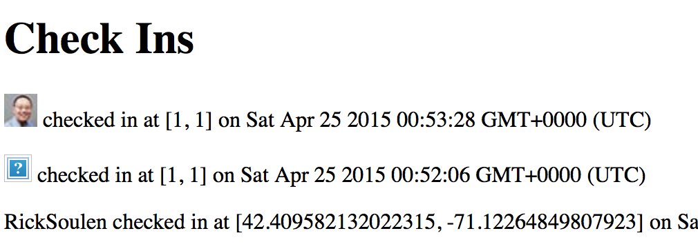

By Jake Jarvis
April 24, 2015
I have been assigned to assess the security and privacy features (or lack thereof) of Eric Peterson's Marauder's Map client and server. His client is located here and his hosted Heroku server is located here.
The concept of a Marauder's Map is simple. It shows every inch of Hogwarts, identifying every person on campus and even revealing secret passages. In our case, our map will show the precise location of every one of our users.
The specification for the client involves a Google Map that pulls users and their cooresponding coordinates from a server for the purpose of displaying pinpoints on a large map. The specification for the accompanying server involves a Node.js web app and MongoDB database that work together to store these logins and coordinates. There are two ways to access these – an HTML list located at the root of the domain that displays all data, and a location.json file that returns all coordinates in JSON format for a given login. Coordinates are stored by way of a POST request to this server.
For the purpose of this report, I will try my best to break his code or, in other words, make it do things that Eric did not intend it to do — whether that results in danger (cross-site scripting), manipulation (fake coordinates or spoofed logins), or humor (displaying memes instead of coordinates).
I will begin by treating Eric's Heroku server as a black box. In other words, I will not look at his code just yet.
My first focus will be on data I am able to submit to the Heroku server. If Eric followed the specifications, I should be allowed to submit anything to each of the three fields (login, lat, lng), most importantly any HTML and JavaScript. This will allow me to do anything from display images to execute JavaScript on both the list of users on the server page as well as the map client. This is known as cross-site scripting (XSS).
I can easily test for XSS by executing a simple JS command like <script>alert('Uh oh...')</script>, which will tell the browser to display a pop-up window:
I can do this by injecting it into the login parameter when sending a POST request to the /sendLocation endpoint using CURL on my command line. If this works, I will delve much deeper into the most dangerous types of scripts I can execute on the browsers of whoever uses his map client.
curl --data "login=<script>alert('Uh oh...')</script>&lat=1&lng=1" https://frozen-temple-1955.herokuapp.com/sendLocation
Most of Eric's vulnerabilities come down to one mistake: he trusts the user to give valid input instead of enforcing some basic rules on his end.
Fortunately, Eric checked for valid coordinates by using isNaN() on the lat and lng parameters to ensure that they are numbers. However, the login paramater will accept any input, including the "Uh oh!" alert window code described above. This means I was successful and this server is fully vulnerable to XSS. I can now execute any HTML or JavaScript, including the use of <script src="...."><script> to point to a .js file on my own server. Easy peasy!
Privacy-wise, it should be obvious to any internet user that making an entirely public list of the exact coordinates of your users isn't the best idea. This is a bit of a conundrum, though; the purpose of a Marauder's Map is to know where everybody is without prejudice. However, there are more sensitive ways to dispense this information to authorized eyes only.
More on these issues and their potential fixes below.
<iframe> tag.
...and an embedded webpage that looks like this:
It's worth noting that this JavaScript is not executed when it is pulled for the purpose of labeling a Google Maps pinpoint.
< and greater-than > signs. You can do this in JavaScript using the replace() function:
login.replace(/&/g, "&").replace(/</g, "<").replace(/>/g, ">"); (source)

I ran into no surprises when assessing the holes of Eric's server and client. He conformed to the specifications for Assignments 2 & 3. However, this experiment underlies the importance of never trusting your users. Even though the developer expected plaintext to be submitted through the login field, anything could be submitted in reality. (It's worth giving him an A for effort for checking that the lat and lng were numbers, though!)
All web developers should know that these checks are incredibly trivial to implement. If you're a web developer who is paying someone to tell you these things, you should probably reevaluate your career choice!